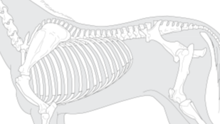
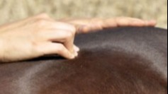
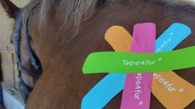
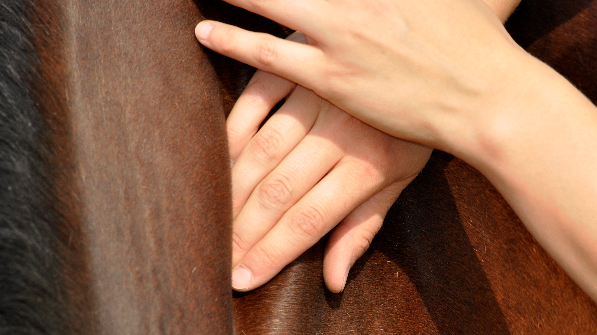
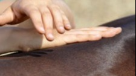

Als chiropraktische Technik setzt die Dorntherapie am Skelett an. Bei Blockaden und Gelenkbe-schwerden ist sie die sanfte Hilfe der Wahl.
Hier erfährst du mehr.

"Die Emmett-Technique ist eine erstaunlich sanfte und einfühlsame Muskelentspannungs-Technik, bei der leichter Druck, auf spezifischen Emmettpunkten, ausgeführt wird, um Schmerzen und Unbehagen zu lindern."
Hier erfährst du mehr.
Überall wo Heilung statt finden soll, ist Magnetfeld-therapie hilfreich. Sie wirkt entzündungs-hemmend, schmerzstillend, durchblutungs-fördernd und entspannend.
Hier erfährst du mehr.

Die bunten Tapes stützen und stabilisieren, fördern Lymphfluss und Regeneration. Sie sind somit weit mehr als nur hübsch anzusehen.
Hier erfährst du mehr.

Faszien unterstützen den Körper in all seinen Funktionen und Kompensationen. Sie sind oft der Schlüssel zum Therapieerfolg.
Hier erfährst du mehr.

Verletzungen, Stoffwechsel-probleme und Narben sind nur drei Ursachen für Lymphstau. Lymphdrainage bringt dieses System wieder in Schwung.
Hier erfährst du mehr.
Die Arbeit mit Muskeln und Gelenken steht hier im Vordergrund. Massagen, Dehnungen und vor allem auch individuelles und angepasstes Training führen kurzfristig zu Problembehebung und langfristig zu Problemvermeidung.
Gerne kommen auch physikalische Reize wie Wärme, Kälte, Strom, Magnetfeld, Druck und Strahlung zur Anwendung um sowohl vorbeugend als auch wiederherstellend zu wirken.
Oft wird die Physiotherapie begleitend zur Therapie eines Tierarztes oder Tierheilpraktikers eingesetzt um Heilungsprozesse zu fördern und zu beschleunigen.
Obwohl der Bewegungsapparat im Vordergrund steht ist nicht ausser Acht zu lassen, was für einen Einfluss die Physiotherapie auch auf die Psyche hat. Nervöse Tiere werden ruhiger, phlegmatische dafür aufgeweckter. So kann die Physiotherapie auch bei unkonzentrierten oder unmotivierten Pferden helfen. Fühlt sich das Tier wieder wohl in seinem Körper, so arbeitet es auch willig mit.
|Hier geht es zum Blog "Papa, was ist Pferdefüßetherapie?"
Hier geht es zu meinem Blog "Was ist Pferdephysiotherapie?"
Jedem Pferd, egal welchen Alters und Trainingszustandes, hilft Physiotherapie. Sie deckt Probleme auf und bietet Lösungen dafür an. Folgende Anzeichen sind jedoch ein deutliches Argument für eine physiotherapeutische Behandlung:
Empfindlichkeit im Rücken, fester Rücken
Rittigkeitsprobleme / Widersetzlichkeit
Taktunreinheiten, Lahmheiten, deutliche Schiefe
Verhaltensauffälligkeiten jeder(!) Art
Ein Sturz oder Festliegen
Mangelnde Bewegungsfreude, Lethargie
Asymmetrische Kopf- oder Schweifhaltung
Asymmetrische Bemuskelung
Senkrücken, starker Unterhals, Axthieb
Fehlstellungen der Beine
Gesunderhalten alter Pferde
Gesundes Wachstum junger Pferde
Rehabilitation nach Unfall oder Operation
Trainingsaufnahme nach langer Ruhepause
Trainingsoptimierung und Vorbeugung von Verletzungen bei Sport- und Freizeitpferden
Rehabilitation zwischen Turniereinsätzen
Wellness für das Pferd
How to start your own site - Read more